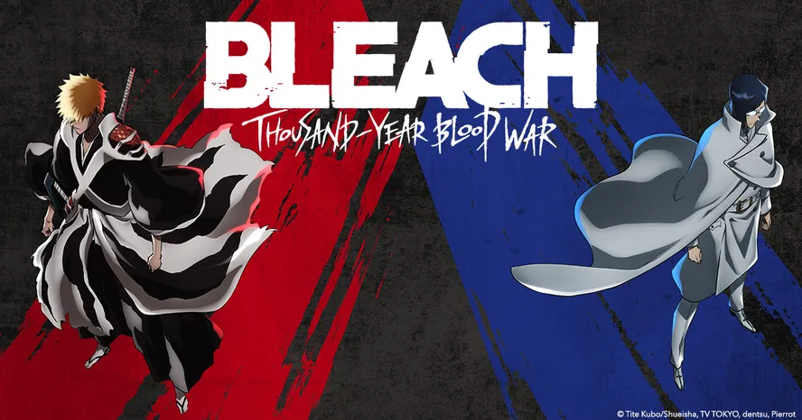

Baixe agora a versão digital do RPG de mesa de Bleach!
TOTALMENTE GRATUITO!

O'que é um RPG de Mesa?
Do inglês, a sigla RPG significa "Role Playing Game",
é um tipo de jogo em que os jogadores assumem papéis de personagens e criam narrativas colaborativamente. O progresso de um jogo se dá de acordo com um sistema de regras predeterminado, dentro das quais os jogadores podem improvisar livremente.
Sobre o Sistema:
Almas e Espadas é uma adaptação da obra Bleach criada pelo mestre Tite Kubo. O objetivo do livro é adaptar o imenso universo da obra para o mundo de RPG de mesa. Através de inspirações de outros sistemas, animes, jogos e a ajuda de muitas pessoas.
Este projeto é feito de fã para fã, o sistema não é perfeito e pode apresentar falhas no balanceamento, sinta-se livre para alterar regras, mecânicas e habilidades cujo não gostar. No fim este livro é apenas um guia para jogar-se uma campanha de RPG tematizada no universo de Bleach.
É importante ressaltar que este projeto é totalmente gratuito e sem fins lucrativos, se você pagou por este livro em qualquer lugar, você foi ROUBADO. Todos os direitos são reservados a Tite Kubo.
Downloads:

Além do livro básico, há planos de outros livros serem lançados futuramente, ampliando o sistema e dando mais ferramentas e conteúdo.